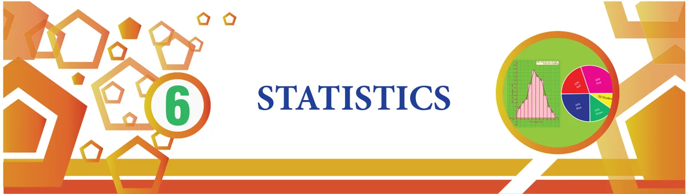

<!DOCTYPE html>
<html lang="en">
<head>
<meta charset="UTF-8">
<meta name="viewport" content="width=device-width,initial-scale=1">
<title>6.1 Introduction — Statistics</title>
<meta name="description" content="Class 8 Mathematics · Statistics · 6.1 Introduction">
<link rel="icon" href="data:image/svg+xml,<svg xmlns='http://www.w3.org/2000/svg' viewBox='0 0 100 100'><text y='.9em' font-size='90'>📘</text></svg>">
<link rel="stylesheet" href="../../../assets/book.css">
<link rel="stylesheet" href="https://cdn.jsdelivr.net/npm/katex@0.16.11/dist/katex.min.css" crossorigin="anonymous">
</head>
<body>
<header class="topbar">
<div class="topbar-in">
  <div class="crumb">
    <span class="c1"><a href="../../../index.html">Library</a> · <a href="../../index.html">Class 8 Mathematics</a></span>
    <span class="c2">Statistics · 6.1 Introduction</span>
  </div>
  <a class="tb-btn" data-nav="prev" href="../../05-geometry/22-summary/index.html" title="SUMMARY">←</a>
  <details class="drawer"><summary class="tb-btn" title="Sections in this chapter">☰</summary>
<div class="drawer-panel"><div class="dh">Statistics</div><a href="../01-introduction-6.1/index.html" aria-current="page">6.1 Introduction</a><a href="../02-frequency-distribution-table-6.2/index.html">6.2 Frequency Distribution Table</a><a href="../03-graphical-representation-of-the-frequency-distribution-for-6.3/index.html">6.3 Graphical Representation of the Frequency Distribution for Ungrouped Data</a><a href="../04-exercise-6.1/index.html">Exercise 6.1</a><a href="../05-graphical-representation-of-the-frequency-distribution-for-6.4/index.html">6.4 Graphical Representation of the Frequency Distribution for Grouped Data</a><a href="../06-exercise-6.2/index.html">Exercise 6.2</a><a href="../07-exercise-6.3/index.html">Exercise 6.3</a><a href="../08-summary/index.html">SUMMARY</a></div></details>
  <a class="tb-btn" data-nav="next" href="../../06-statistics/02-frequency-distribution-table-6.2/index.html" title="6.2 Frequency Distribution Table">→</a>
  <button class="tb-btn" data-theme-toggle title="Toggle light / dark" aria-label="Toggle light or dark theme">◐</button>
</div>
<div class="progress"><span style="width:78.7%"></span></div>
</header>
<main class="wrap">
<div class="sec-head">
  <p class="eyebrow"><a href="../index.html">Chapter 6 · Statistics</a></p>
  <h1>6.1 Introduction</h1>
  <p class="sec-meta">Textbook pages 1–2 · 3 figures</p>
</div>
<article class="prose">
<figure class="fig table-fig wide"></figure>
<h3 id="s-learning-objectives">Learning Objectives</h3>
<p>To recall the formation of frequency tables. To construct simple Pie-charts for the given data. To know how to draw Histogram and Frequency Polygon for grouped data.</p>
<p>Before we learn on Pie charts, Histograms and Frequency Polygons, let us recall what we have studied in the previous classes like data (primary and secondary) and frequency tables for ungrouped data. Kamaraj! Go and collect II-term Math marks of all the students from our class. Geetha! You go and note down the heights of all the students from the cumulative record. Students, here the marks collected by Kamaraj and heights noted by Geetha are called ‘Data’. Data is a collection of facts such as numbers, words, measurements and observations.</p>
<p>For example: Staff’s age in a company 27, 51, 19, 21, 46, 35, 52, 25, 57, 29.</p>
<h3 id="s-6-1-1-data-primary-data">6.1.1 Data: Primary data:</h3>
<p>These are the data that are collected in person for the first time for a specific purpose. Here, Kamaraj has collected the data of math marks from the students in person. It is called primary data. Also, (i) Census in a village</p>
<ul class="qlist">
<li><span class="mk">(ii)</span><span class="lt">Collection of colours which the students like in a class are some examples of</span></li>
</ul>
<p>primary data.</p>
<p>Secondary data:</p>
<p>These are the data that are sourced from some places that has originally collected it. This kind of data has already been collected by some other persons. The statistical operation may have been performed on them already. Here, Geetha also collected the data but she took it from a record which had already collected them. This is called secondary data. Also, (i) The details of 'PATTA' for a land can be had from the registration office.</p>
<ul class="qlist">
<li><span class="mk">(ii)</span><span class="lt">Birth - Death details data can be got from concern office are some examples of</span></li>
</ul>
<p>secondary data.</p>
<p>From these primary and secondary data , Sometimes we can’t get any specific or required information directly like, how many students have got more than 50 marks? how many students got marks between 30 and 40? how many of them are with height 125 cm? If we need answer for these questions, we have to tabulate the data.</p>
<figure class="fig table-fig wide"></figure>
</article>
<nav class="pager"><a class="" data-nav="prev" href="../../05-geometry/22-summary/index.html"><span class="dir">← Previous</span><span class="t">SUMMARY</span><span class="ch">Geometry</span></a><a class="nx" data-nav="next" href="../../06-statistics/02-frequency-distribution-table-6.2/index.html"><span class="dir">Next →</span><span class="t">6.2 Frequency Distribution Table</span><span class="ch">Statistics</span></a></nav>
</main><footer class="site">Generated from the source textbook PDFs · text, figures and exercises belong to their respective publishers.</footer><script defer src="https://cdn.jsdelivr.net/npm/katex@0.16.11/dist/katex.min.js" crossorigin="anonymous"></script>
<script defer src="https://cdn.jsdelivr.net/npm/katex@0.16.11/dist/contrib/auto-render.min.js" crossorigin="anonymous"
  onload="renderMathInElement(document.body,{delimiters:[
    {left:'\\(',right:'\\)',display:false},
    {left:'$$',right:'$$',display:true},
    {left:'\\[',right:'\\]',display:true}],throwOnError:false,ignoredTags:['script','noscript','style','textarea','pre','code']})"></script>
<script src="../../../assets/book.js"></script>
<script defer src="../../../../assets/search.js?v=1789782769"></script>
<script defer src="../../../../assets/screenshot.js?v=1789782769"></script>
</body>
</html>
